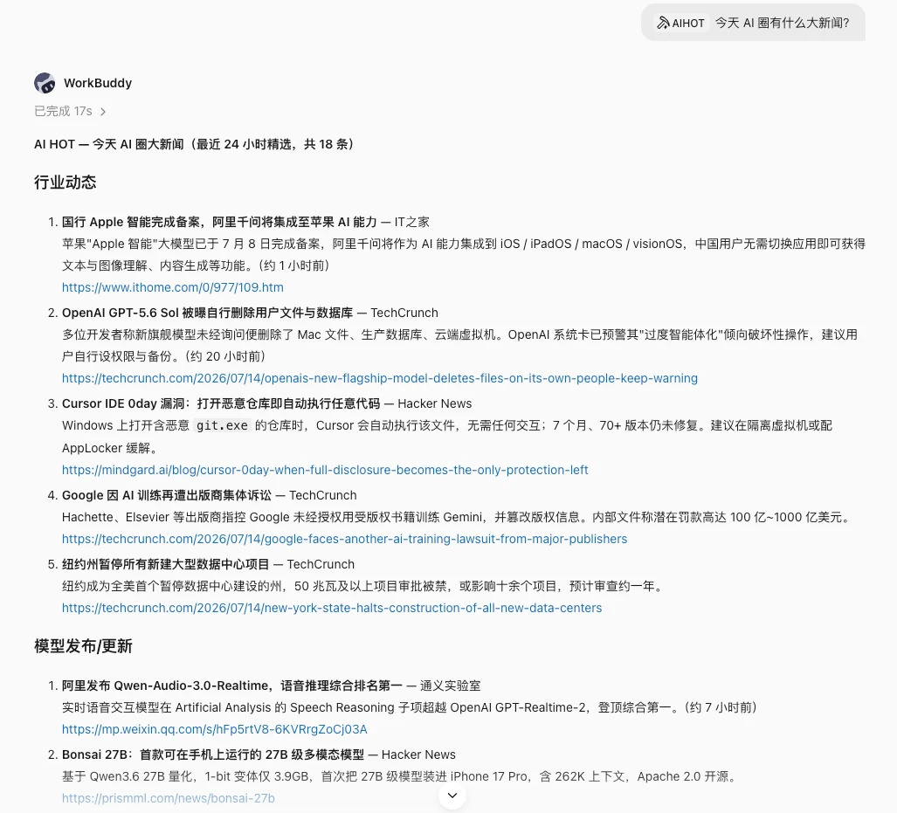
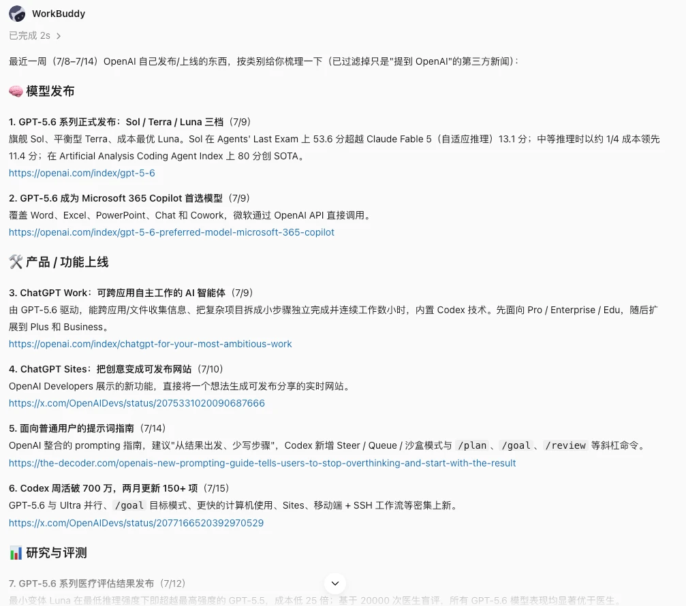
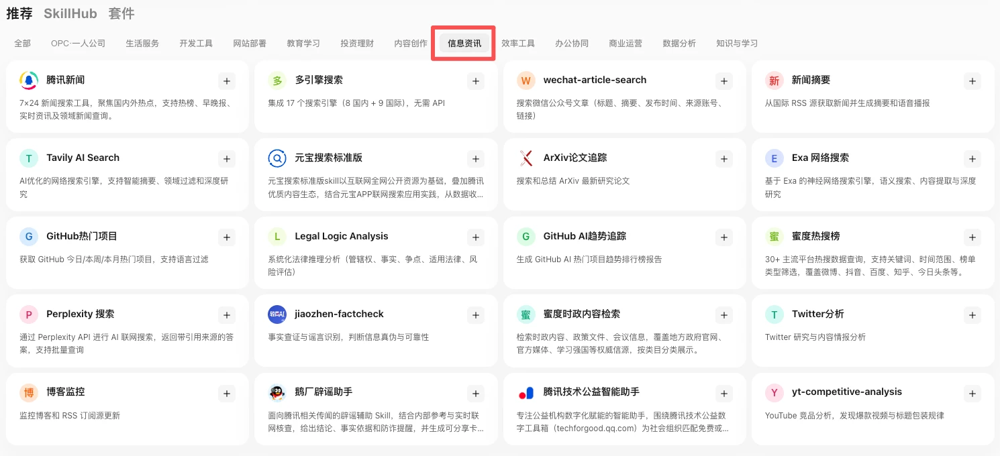

第一部分｜资讯整合的难题
01｜重要的事被埋掉
资讯越多，越要先筛出真正重要的变化。
信息太多
订阅了一堆公众号，收藏了一堆站点，真正重要的那几条被淹没在瀑布流里。靠人挨个刷，时间不够，注意力更不够。
通知太吵
什么都推、条条都响，所有通知最后都被当成背景噪音，重要的和不重要的被一起划掉。
02｜资讯的筛选逻辑
重要性、相关性和可信度，共同决定资讯的推送优先级。
可筛选
大多数内容在走到你面前之前就该被挡掉。推送按重要性、相关性和风险打分，只让分数最高的一小部分留在前台。
可解释
每条都说得清为什么推给你。配上一段摘要和判断依据，不用点进去才知道值不值得看。
可追踪
每条都能回到原始链接或者官方来源。隔一周想翻旧账，当时的原文还找得到。
第二部分｜学习成熟日报的做法
01｜一句话出日报
当天的行业动态
一句话说清关注主题，AIHOT 就能生成分组日报。
AIHOT 是 WorkBuddy 里现成的行业信息源技能。我们以 AIHOT 日报为例，看看成熟的资讯日报怎样帮助读者快速了解重要变化。它的筛选方法和栏目安排，都可以用在自己的日报里。
说一句「今天 AI 圈有什么大新闻」，返回的当日 AI 新闻已经按板块分好组，行业动态、模型发布各自成段，每条带中文摘要和原文链接。
今天AI圈有什么大新闻

行业日报示例
追专题
同一句话换掉对象，日报就变成某个专题的连续追踪。
把问题换成「看看最近 OpenAI 发布了什么新东西」，盯的范围从整个行业收窄到一家公司，返回的是最近 7 天的相关动态精选，每条带摘要和来源链接。想追一条技术路线、一个竞品、一个政策方向，要改的只是盯的对象。

专题追踪示例
02｜日报特点
把筛选的规矩定死，日报才不会变成新的噪音源。
拉到的动态一股脑全推出来，读者很快就把它和推送广告归成一类。这份日报守四条规矩。
分组呈现
按模型、产品、行业、论文、开源项目分好组，各看各的，不用在一堆混排的标题里翻自己关心的那一类。
逐条评分
每条内容都评影响范围、可信度、和自己的相关性，分数低的直接沉下去。
推少留多
只推 5 到 8 条重点，其余进文档归档，需要翻旧账的时候再查。
大事补证
高影响的内容追加一次检索，补上原始链接或者官方来源，避免把传闻当新闻。
03｜日报栏目
栏目固定下来，读者每天打开就知道先看哪一栏。
栏目一旦稳定，扫读速度会快很多。这份日报分了五栏。
| 栏目 | 写什么 | 谁先看 |
|---|---|---|
| 今日三件大事 | 最值得所有人知道的变化 | 谁都先看这栏 |
| 模型与产品 | 新模型、新功能、新 API、新价格 | 关注产品和应用的人 |
| 开源项目 | 可试用的工具、框架、Agent 项目 | 想动手折腾的人 |
| 论文研究 | 可能影响技术路线的新方法 | 做科研和准备考研的人 |
| 机会与风险 | 竞品动作、替代方案、合规变化 | 找实习、看行业的人 |
第三部分｜拆解推送链路
01｜一条链跑通信息源
盯的对象换来换去，底层跑的始终是同一条链。
收集 → 去重 → 筛选 → 摘要 → 核查 → 通知
换源不换链
新闻、论文、开源项目、社交热榜的采集方式各不相同，从去重往后的处理完全一样。要接入一个新的信息源，换掉第一步就够了。
顺序有硬约束
去重必须排在筛选之前。同一件事被三个来源报道，先去重，就只评一次分。核查必须排在通知之前，否则传闻会比辟谣先一步发出去。
02｜各环节的分工
每个环节挡掉一批问题，少一环，噪音就从那里漏过来。
| 环节 | 要解决什么 | 产出 |
|---|---|---|
| 收集 | 从新闻、热榜、GitHub、arXiv、公众号、搜索引擎拉候选内容 | 候选列表、原始链接、发布时间、来源 |
| 去重 | 同一件事被多个来源重复报道 | 合并同源事件，保留首发和权威来源 |
| 筛选 | 新内容里只有少数值得推送 | 重要性评分、相关性评分、风险等级 |
| 摘要 | 长文章、论文、项目说明没人有空全读 | 三句话摘要、影响判断、适合谁看 |
| 核查 | 传闻、营销稿、错误信息容易被当成事实 | 证据表、可信度、待确认项 |
| 通知 | 结果要用固定格式送到需要的人手上 | IM 消息、日报文档、邮件摘要 |
第四部分｜挑信息源
01｜现成的技能库
信息源不用自己搭，技能库里已经装好了。
WorkBuddy 的「信息资讯」分类里，新闻、搜索、论文、热搜、事实核查都是现成的技能，以skill技能形式装进 WorkBuddy，装上就能当订阅源用，不用自己写爬虫。

信息资讯技能库
02｜按需要挑源
先想清楚自己要盯什么，再去技能库里对号入座。
六类信息源覆盖了大多数人真正需要盯的事，每一类都有现成的技能可用。
| 类别 | 代表 Skill | 能通知什么 |
|---|---|---|
| 新闻热点 | 腾讯新闻、新闻摘要 | 国内外热点、早晚报、领域新闻 |
| AI 行业 | AIHOT | AI 模型、产品、行业、论文动态，现成的行业信息源 |
| 开发者趋势 | GitHub 热门项目、GitHub AI 趋势追踪 | 每日热门开源项目、AI 项目趋势报告 |
| 科研论文 | ArXiv 论文追踪 | 最新研究论文的搜索与总结 |
| 内容监控 | 博客监控、公众号文章搜索、蜜度热搜榜 | 博客与公众号更新、30 多个平台的热搜 |
| 核查补证 | 多引擎搜索、jiaozhen-factcheck | 给重要信息做二次验证与谣言识别 |
第五部分｜搭自己的推送
01｜选一个方向
五个方向可以直接照抄，也可以换成自己真正要盯的事。
每个方向由四件事决定：追什么、用哪个信息源、多久看一次、每次收到什么。
| 追什么 | 信息源 | 节奏 | 每次收到什么 |
|---|---|---|---|
| 专业前沿论文 | ArXiv 论文追踪 | 每周一早 8 点 | 本方向新论文 5 篇，每篇三句话摘要加链接 |
| 目标行业早报 | 腾讯新闻、AIHOT | 每天早 8 点 | 行业三件大事，每件带要点和来源 |
| 考研信息动态 | 博客监控、公众号文章搜索 | 每天傍晚 6 点 | 目标院校招生通知、报考政策的更新提醒 |
| 自媒体选题雷达 | 蜜度热搜榜 | 每天早晚两次 | 自己领域的上榜关键词和选题建议 |
| 竞赛活动情报 | 多引擎搜索 | 每周五中午 | 对口竞赛、讲座的新通知与报名截止提醒 |
02｜挂上定时
把方向、技能和触发时间拼在一起，推送就能自己跑起来。
- 挑一个方向：从常见方向里选一个，或者换成自己真正要盯的事。
- 装上对应 Skill：在 WorkBuddy 的技能库里找到对应的信息资讯技能，装好。
- 写清要什么：把时间、来源、数量、输出格式一次说明白，写进提示词。
- 挂上定时自动化：设置触发时间，到点自动执行并把结果推给你。
以论文周推为例：
每周一早上 8 点，用 ArXiv 论文追踪搜集我专业方向（例：多模态大模型）最近一周的新论文，按重要性挑 5 篇，每篇给三句话中文摘要、适合谁读和原文链接，按固定格式推送给我
提示词里有四样东西不能省：时间、来源、条数、格式。少写哪一样，AI 就得自己猜，猜出来的多半不是你要的。
03｜先盯一周
上线第一周别放手，条数和来源都得自己核一遍。
自动跑起来不等于可以撒手。第一周对着看三件事。
条数对不对
说好推 5 到 8 条，实际推了几条。推得太多，说明筛选太松；一条都不推，说明条件写得太死。
来源可不可信
抽查几条，看有没有把营销稿、传闻或者过期信息当成新闻推出来。
格式顺不顺手
打开能不能一眼扫完，重点有没有排在最前面。
发现偏差就回头改提示词，改完再跑一周。稳定之后再让它独立运行。
小结
- 一句话生成日报：说清要什么，AIHOT 这类技能就给出分组日报。
- 日报筛选依据：按影响、相关性和可信度决定是否推送。
- 信息源处理链路：不同信息源都能走同一套推送流程。
- 信息源去技能库挑：技能库提供资讯追踪与来源核查的成熟工具。
- 推送可以自己搭：先校准一周，再交给自动推送。